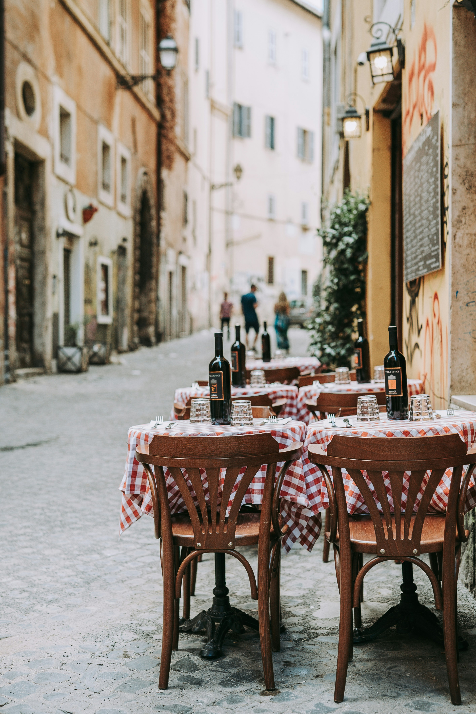

Nestled in the heart of the city lies "JOE'S," a culinary haven where tradition and soul meet the plate. Inspired by the wisdom and recipes of the beloved grandmother Jamal,also known as Joe, who once taught the head chef and owner, every dish we serve is steeped in the rich flavors and warmth of a family kitchen. Joe was more than just a grandmother; she was a maestro of Italian cooking, her kitchen a temple where generations of culinary secrets were passed down with love and precision. Today, Joe's legacy lives on through the hands of her protégé, where each meal is a tribute to her timeless artistry and passion for bringing people together around the table. At JOE'S, the essence of Italian dining is celebrated in every bite. From the rustic elegance of our dining space to the meticulously crafted menu, every detail reflects the soulful journey from a humble family kitchen to the sophisticated plates presented to our guests. Our menu is a blend of cherished family recipes and innovative creations, showcasing the depth and diversity of Italian cuisine. Here, we invite you to experience not just a meal, but a journey through the flavors and stories that made Joe a legend in her own right. With every visit, you're not just our guest; you're part of our extended family, welcomed with open arms and served with the same love and elegance that Joe herself championed.